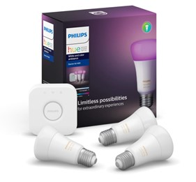
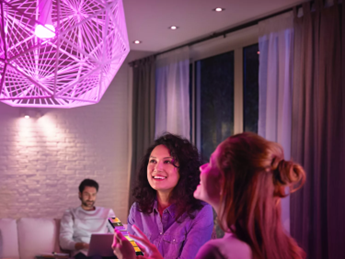

Philips hue first launched in China is the initial set, which includes 3 LED bulbs and a bridge; One bridge can support up to 50 bulbs simultaneously. And the LED bulbs hue uses are more energy-efficient than traditional incandescent bulbs. In terms of control, Philips provides iOS and Android applications for different users to choose.
●Connect to different Internet services or social networking sites to provide weather forecasts, appointment alerts, or alerts when you receive new messages or emails
●Each hue bulb offers different white light levels, cool to warm hue variations, and up to 16 million color options. hue bulbs can be changed by selecting the color of your favorite photo or picture in your phone.
●Choose four preset lighting formulas (relax, focus, vitality, and concentration reading) to create different lighting conditions for your home.
●Set the corresponding lighting mode for different rooms in your home according to your personal preferences. Or set your favorite lighting effects for different moments.
●By using geo-location function, you can automatically turn on the lights when you get home or turn off the lights when you leave home.
●Remote control and view the lighting equipment at home to improve home safety.
●hue has alarm clock and timing function, which can preset the time and use the light to wake up in the morning. Or remind you to fall asleep at night.
●Set the prompt function to effectively manage your day through changes in lighting
 
How to implement iot
Smart bulbs and sensors:
Zigbee protocol: Philips Hue smart bulbs use Zigbee wireless communication protocol, which is a low-power, ad-hoc communication protocol suitable for interconnection between iot devices. Each smart bulb can act as a node in the Zigbee network, communicating and collaborating with other devices such as smart gateways and sensors.
Intelligent Gateway (Bridge) :
Centralized control: The smart gateway in the Philips Hue system acts as a central control device, responsible for managing and controlling all connected smart bulbs and other smart devices. The smart gateway connects to the user's phone app or other smart home systems via Wi-Fi, enabling the user to remotely control home lighting via the Internet.
Cloud Services and Applications:
Remote Access and Control: Through Philips' cloud services, users can remotely access and manage their Hue smart lighting systems. This means that no matter where the user is, as long as they have an Internet connection, they can use the mobile app or through the web interface to control the lighting on and off, brightness, color and scene Settings.
Intelligent control function:
Scheduled tasks and Scene Settings: Philips Hue allows users to set scheduled tasks, such as automatically adjusting light brightness based on sunrise and sunset times, or automatically turning lights on or off at specific times. Users can also create and save different scene Settings, such as reading mode, relaxation mode or party mode, and the system will adjust the color and brightness of the lights accordingly.
Integrate third-party platforms and voice control:
Smart Home ecosystem: The Philips Hue system integrates with multiple smart home platforms (such as Apple HomeKit, Google Assistant, Amazon Alexa, etc.), allowing users to control home lights through voice commands, improving the user friendliness and interoperability of the system.